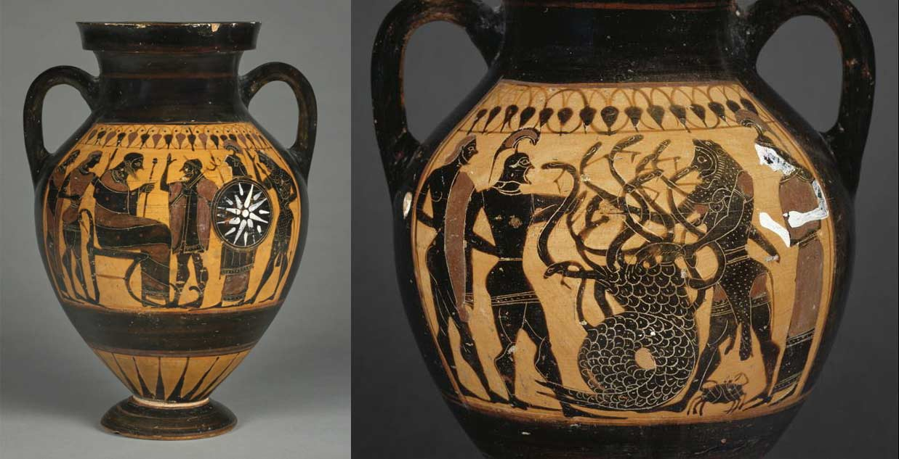
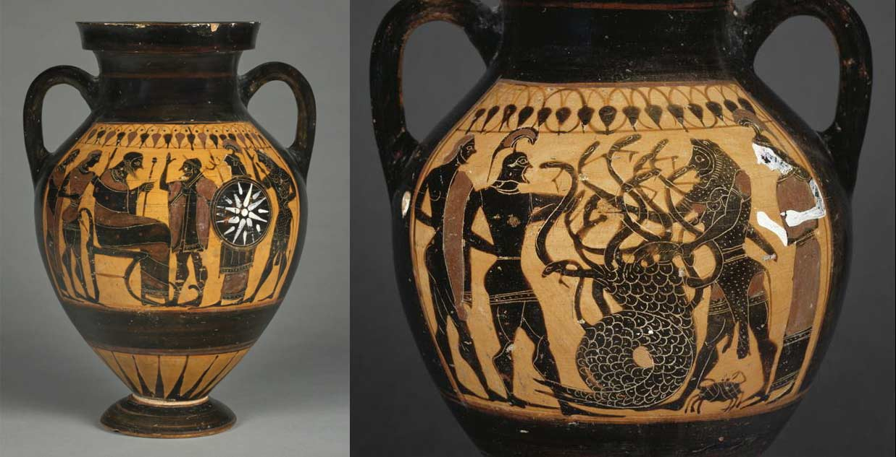

La Historia de la Antigua Grecia
Explora los orígenes, la cultura, y el legado que dio forma a la civilización occidental.
Explora los orígenes, la cultura, y el legado que dio forma a la civilización occidental.
La historia de la antigua Grecia es fundamental para entender el mundo occidental. Desde sus inicios, hasta el legado de su cultura, Grecia ha dejado una huella imborrable en la filosofía, la política, las ciencias y el arte.
Conocer la historia de Grecia es comprender el origen de muchas ideas que siguen vigentes hoy en día. Desde la democracia de Atenas hasta las obras filosóficas de Platón y Aristóteles, su influencia se extiende a lo largo de los siglos.

La civilización griega tiene sus raíces en dos grandes culturas prehelénicas: la minoica y la micénica.
La civilización minoica (2500-1450 a.C.) floreció en la isla de Creta. Fue una sociedad avanzada en comercio, arte y arquitectura. Los minoicos construyeron palacios majestuosos, como el de Cnosos, y desarrollaron un sistema de escritura conocido como Lineal A, aunque aún no ha sido descifrado.
La civilización micénica (1600-1200 a.C.), en el continente griego, es conocida por su fuerza militar y sus relatos épicos, como la guerra de Troya narrada por Homero. Los micénicos también adoptaron el sistema de escritura Lineal B, que ha sido descifrado, y su influencia cultural es clara en la Grecia clásica.
La cultura griega es una de las más influyentes en la historia de la humanidad. Los griegos no solo sentaron las bases de la democracia, sino que también hicieron enormes avances en las ciencias, las artes y la filosofía.
La mitología griega está poblada por un vasto panteón de dioses y héroes, cuyas historias han influenciado la literatura, el arte y la cultura popular hasta nuestros días. Entre los dioses más conocidos se encuentran:
Las leyendas griegas no solo relatan las hazañas de estos dioses, sino también de héroes humanos como Hércules, Aquiles, y Ulises. Los relatos mitológicos explican el origen del mundo, las costumbres y la moralidad de la antigua Grecia.
La filosofía griega marcó el nacimiento del pensamiento racional en Occidente. Grandes filósofos como Sócrates, Platón y Aristóteles sentaron las bases del pensamiento moderno.
Sócrates fue el padre de la ética occidental. Su método de diálogo y cuestionamiento radical transformó la forma en que la humanidad piensa sobre la moralidad.
Platón, alumno de Sócrates, fundó la Academia y escribió diálogos en los que exploró temas como la justicia, la política, y la naturaleza del conocimiento.
Aristóteles, alumno de Platón, fue un pionero en muchas disciplinas, desde la lógica hasta la biología. Su énfasis en la observación empírica sentó las bases de las ciencias modernas.
La estética griega buscaba la perfección y la proporción. La arquitectura griega es famosa por sus columnas y templos, como el Partenón en Atenas, un símbolo de la grandeza y la democracia de la ciudad.
En el arte, la escultura alcanzó un nivel de realismo sin precedentes. Escultores como Fidias crearon estatuas monumentales que celebraban tanto a los dioses como a los héroes humanos.
El teatro griego, tanto en su forma de comedia como de tragedia, comenzó con figuras como Esquilo, Sofocles y Eurípides. Las obras teatrales no solo eran entretenimiento, sino que también transmitían importantes lecciones morales y políticas.
Los griegos también fueron pioneros en las ciencias y las matemáticas. Figuras como Pitágoras y Euclides hicieron grandes avances en geometría y matemáticas. Mientras tanto, Arquímedes realizó descubrimientos clave en física y mecánica, y Hipócrates es conocido como el padre de la medicina, al establecer principios éticos en la práctica médica.

La civilización griega se caracteriza por su énfasis en la racionalidad, el equilibrio y la búsqueda de la belleza en todos los aspectos de la vida, desde la política hasta las artes. Además, las polis griegas desarrollaron una organización política y social única, especialmente visible en la democracia de Atenas.
En términos de gobierno, Atenas es conocida por ser la cuna de la democracia, donde los ciudadanos (excluyendo a mujeres, esclavos y extranjeros) participaban directamente en la toma de decisiones. Por otro lado, Esparta era una sociedad militarista, en la que el estado controlaba todos los aspectos de la vida de sus ciudadanos.
 


La civilización minoica se desarrolló en la isla de Creta y es considerada una de las primeras culturas avanzadas de Europa. Fue conocida por su habilidad en el comercio marítimo, su arquitectura impresionante y su arte vibrante. Construyeron palacios majestuosos, como el de Cnosos, y desarrollaron el sistema de escritura Lineal A. Su declive fue causado por desastres naturales, como la erupción de Thera, y posibles invasiones micénicas.
Surgió en el continente griego y marcó el inicio de una cultura militarista. Los micénicos construyeron fortalezas ciclópeas y adoptaron la escritura Lineal B, que ha sido descifrada. Este período es famoso por los relatos épicos de Homero, como la Guerra de Troya. Su caída se debió a invasiones y disturbios internos.
Tras el colapso micénico, Grecia experimentó un declive cultural significativo. Las ciudades fueron abandonadas y la escritura desapareció. Durante este período, los relatos épicos se transmitieron oralmente y al final de esta etapa se introdujo el alfabeto griego, marcando un renacimiento cultural.
Consolidación de las ciudades-estado o polis, como Atenas y Esparta. En este período se desarrollaron formas tempranas de democracia en Atenas y se expandieron las colonias griegas. El arte comenzó a mostrar influencias orientales, y se establecieron las bases del estilo clásico en la arquitectura.
La cumbre de la civilización griega. Atenas destacó por su democracia y su arquitectura, con el Partenón como símbolo. Este período incluye las Guerras Médicas, la filosofía de Sócrates, Platón y Aristóteles, y el declive causado por las Guerras del Peloponeso entre Atenas y Esparta.
Comienza con la muerte de Alejandro Magno. Este período se caracteriza por la mezcla de culturas griegas, persas y orientales. Ciudades como Alejandría se convirtieron en centros de conocimiento. Finalizó con la conquista romana, pero dejó un legado cultural que influyó profundamente en Roma.
La historia de Grecia es un testimonio del ingenio humano, cuyas ideas y logros continúan influyendo en nuestra vida cotidiana. Su legado en filosofía, democracia, arte, ciencia y política sigue siendo la piedra angular de la civilización occidental.